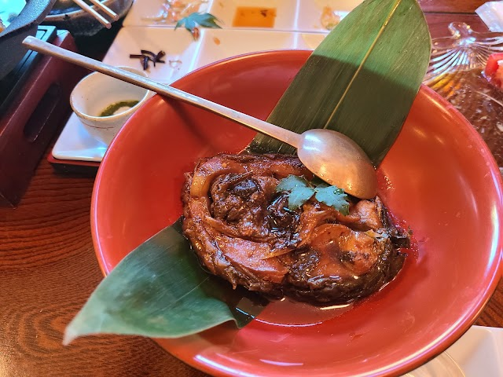
| 営業時間 | 月・火・水・木・金・土・日 11:30〜14:00, 17:00〜21:30 |
|---|---|
| 定休日 | なし(要最終確認) |
| 住所 | 福島県郡山市大槻町水門東１−２０ |
| 予約 | 可 — ☎ 024-983-3199 ／ 公式サイト |
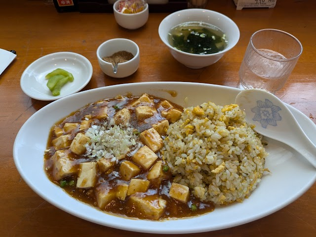
| 営業時間 | 月・水・木・金 11:30〜15:00, 17:00〜21:30 ／ 土・日 11:30〜21:30 |
|---|---|
| 定休日 | 火曜 |
| 住所 | 福島県郡山市駅前２丁目７−１９ |
| 予約 | 可 — ☎ 0120-218-051 ／ 公式サイト |
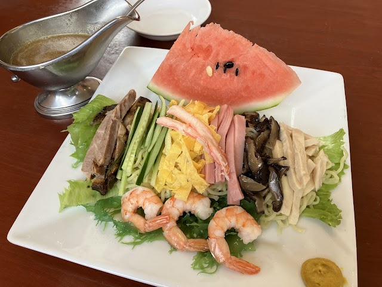
| 営業時間 | 月・火・木・金・土・日 11:00〜15:00, 17:00〜21:00 |
|---|---|
| 定休日 | 水曜 |
| 住所 | 福島県郡山市安積４丁目３８−３８ |
| 予約 | 可 — ☎ 024-946-3171 ／ 公式サイト |
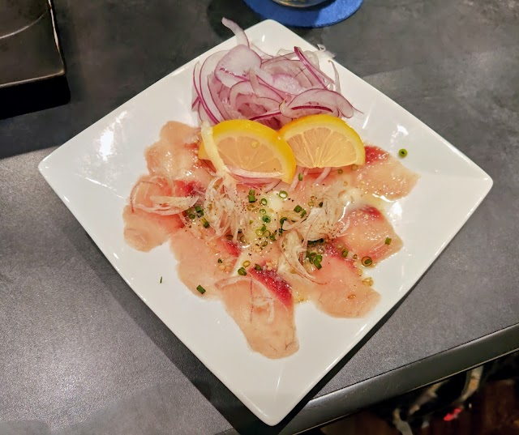
| 営業時間 | 月・火・水・木・金・土・日 11:00〜20:30 |
|---|---|
| 定休日 | なし(要最終確認) |
| 住所 | 福島県郡山市燧田１９５ |
| 予約 | 可 — ☎ 024-933-5105 ／ 公式サイト |
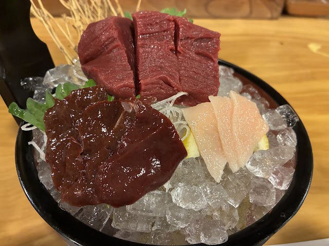
| 営業時間 | 月・火・水・木・金・土・日 17:00〜0:00 |
|---|---|
| 定休日 | なし(要最終確認) |
| 住所 | 福島県郡山市大町１丁目２−１８ |
| 予約 | 可 — ☎ 024-931-1056 ／ 公式サイト |
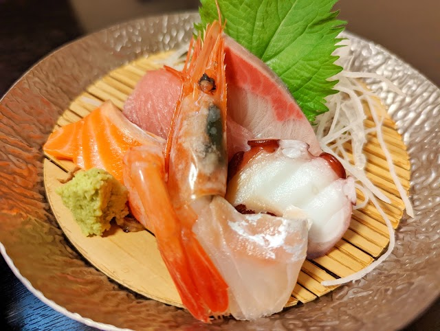
| 営業時間 | 月・火・水・木・金・土 17:00〜23:00 |
|---|---|
| 定休日 | 日曜 |
| 住所 | 福島県郡山市駅前１丁目４−３ SSポ-トビル1F |
| 予約 | 可 — ☎ 050-5487-2090 ／ 公式サイト |
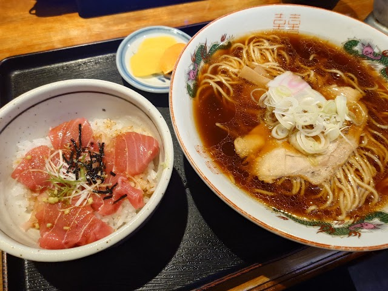
| 営業時間 | 月・火・木・金・土・日 11:00〜15:00, 17:00〜21:30 |
|---|---|
| 定休日 | 水曜 |
| 住所 | 福島県郡山市安積２丁目３４６−２ |
| 予約 | 可 — ☎ 024-945-9848 |
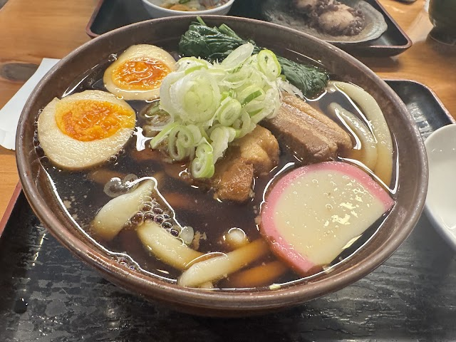
| 営業時間 | 月・火・水・木・金・土・日 10:00〜19:00 |
|---|---|
| 定休日 | なし(要最終確認) |
| 住所 | 福島県郡山市熱海町安子島鞍手山１ |
| 予約 | 要確認 — ☎ 024-984-3774 ／ 公式サイト |
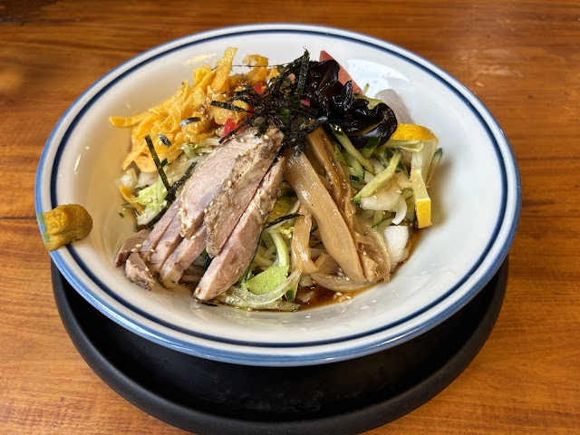
| 営業時間 | 月・水・木・金 11:00〜18:30 ／ 土・日 11:00〜14:40, 17:00〜18:30 |
|---|---|
| 定休日 | 火曜 |
| 住所 | 福島県郡山市湖南町福良中町７６ |
| 予約 | 要確認 — ☎ 024-983-2515 ／ 公式サイト |
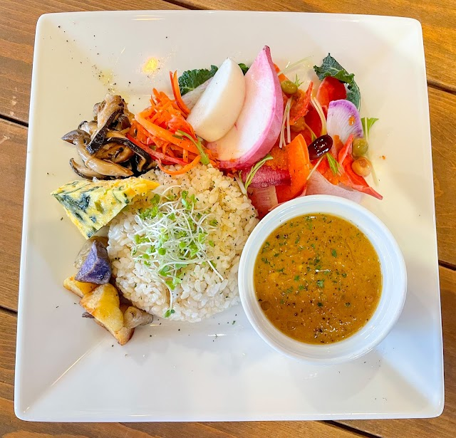
| 営業時間 | ランチ11:00〜15:00／カフェ15:00〜17:00／ディナー18:00〜20:30（夜は予約制） |
|---|---|
| 定休日 | 不定休 |
| 住所 | 福島県郡山市湖南町中野向町２７４７ |
| 予約 | 可 — ☎ 050-8888-4244 ／ 公式サイト |
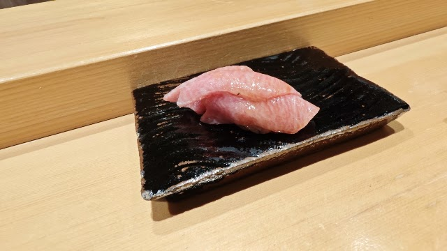
| 営業時間 | 月・水・木・金・土 12:00〜14:00, 17:00〜22:00 ／ 日 12:00〜14:00, 17:00〜21:00 |
|---|---|
| 定休日 | 火曜 |
| 住所 | 福島県郡山市駅前１丁目５−６ |
| 予約 | 可 — ☎ 024-938-3343 ／ 公式サイト |
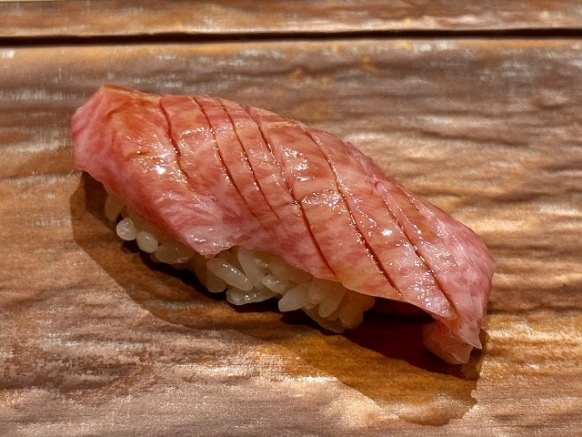
| 営業時間 | 月・火・水・木・金・土 17:00〜22:00 |
|---|---|
| 定休日 | 日曜 |
| 住所 | 福島県郡山市駅前１丁目４−１３ エリート11ビル1階 |
| 予約 | 可 — ☎ 024-933-6699 ／ 公式サイト |
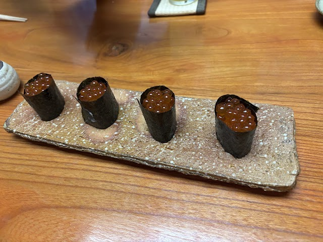
| 営業時間 | 月・火・木・金・土・日 17:30〜22:00 |
|---|---|
| 定休日 | 水曜 |
| 住所 | 福島県郡山市桑野１丁目２１−２５ さくらハイツ |
| 予約 | 可 — ☎ 024-935-6091 |
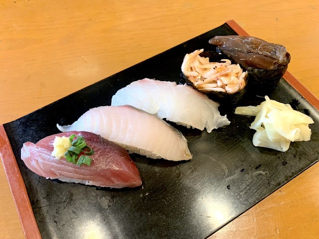
| 営業時間 | 月・火・水・木・金 17:00〜23:30 ／ 土・日 16:00〜23:30 |
|---|---|
| 定休日 | なし(要最終確認) |
| 住所 | 福島県郡山市大槻町針生 141番地 |
| 予約 | 可 — ☎ 024-927-6580 ／ 公式サイト |
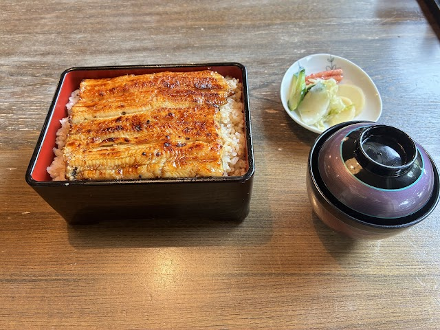
| 営業時間 | 月・木・金・土・日 11:30〜14:00, 17:00〜20:30 ／ 火 11:30〜14:00 |
|---|---|
| 定休日 | 水曜 |
| 住所 | 福島県郡山市名郷田１丁目１４ |
| 予約 | 可 — ☎ 024-931-6733 ／ 公式サイト |
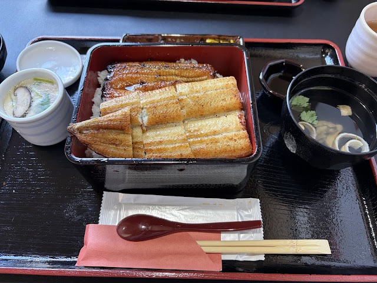
| 営業時間 | 月・火・水・木・金・土・日 11:00〜14:00, 17:00〜20:00 |
|---|---|
| 定休日 | なし(要最終確認) |
| 住所 | 福島県郡山市堤２丁目１９８−３ |
| 予約 | 可 — ☎ 024-952-9555 ／ 公式サイト |
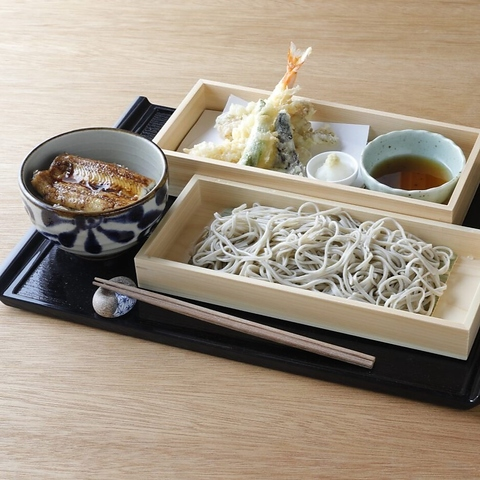
| 営業時間 | 火・水・木・金・土・日 11:30〜14:00, 17:00〜22:00 |
|---|---|
| 定休日 | 月曜 |
| 住所 | 福島県郡山市桑野２丁目１７−１２ Ｊ＆Ｃビル 1階 |
| 予約 | 可 — ☎ 024-953-6727 ／ 公式サイト |
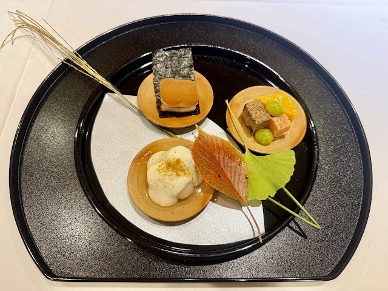
| 営業時間 | 火・水・木・金・土・日 11:30〜14:00, 17:30〜22:00 |
|---|---|
| 定休日 | 月曜 |
| 住所 | 福島県郡山市富田町東５丁目１０１ |
| 予約 | 可 — ☎ 024-934-9939 ／ 公式サイト |
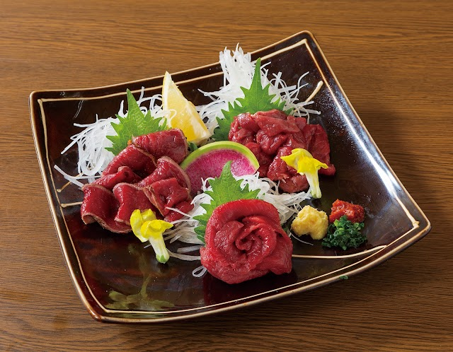
| 営業時間 | 月・火・水・木・金・土・日 11:00〜14:30, 17:00〜22:30 |
|---|---|
| 定休日 | なし(要最終確認) |
| 住所 | 福島県郡山市駅前１丁目６−１０ ダイワロイネット 1F |
| 予約 | 可 — ☎ 024-953-5340 |
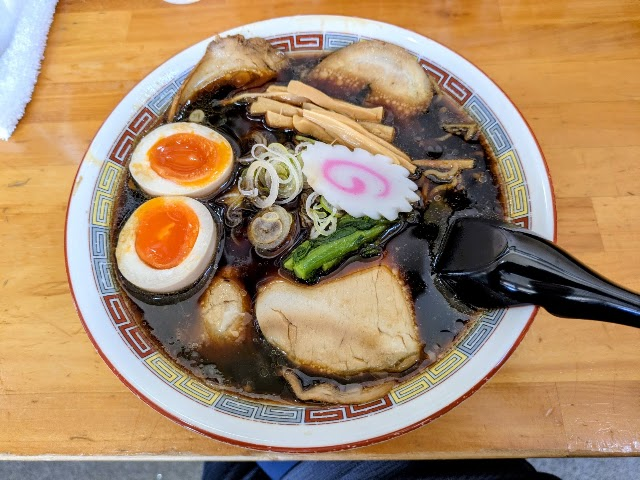
| 営業時間 | 11:30〜（スープがなくなり次第終了） |
|---|---|
| 定休日 | 月曜（祝日の場合は翌日） |
| 住所 | 福島県郡山市台新１丁目４−１３ |
| 予約 | 要確認 |
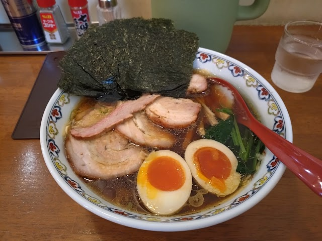
| 営業時間 | 火・水・木・金・土・日 11:30〜15:00 |
|---|---|
| 定休日 | 月曜 |
| 住所 | 福島県郡山市図景２丁目９−７ |
| 予約 | 要確認 — ☎ 024-923-3626 ／ 公式サイト |
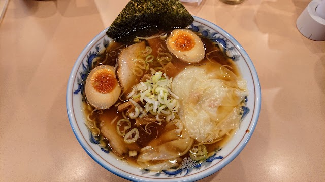
| 営業時間 | 月・火・水・木・金・土 11:00〜15:00, 17:30〜20:30 ／ 日 11:00〜15:00 |
|---|---|
| 定休日 | なし(要最終確認) |
| 住所 | 福島県郡山市新屋敷１丁目35−１０２ |
| 予約 | 要確認 — 公式サイト |
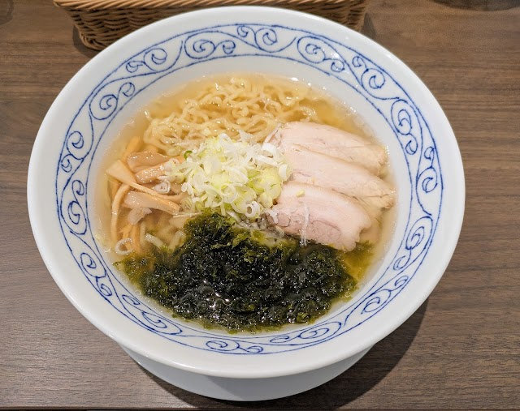
| 営業時間 | 月・火・水・金 7:00〜14:30 ／ 土・日 7:00〜15:00 |
|---|---|
| 定休日 | 木曜 |
| 住所 | 福島県郡山市開成１丁目５−５ |
| 予約 | 要確認 — ☎ 024-953-8898 ／ 公式サイト |
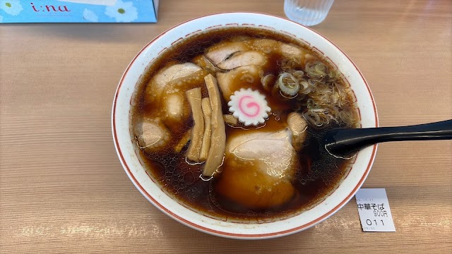
| 営業時間 | 月・火・水・金・土・日 8:00〜14:30 |
|---|---|
| 定休日 | 木曜 |
| 住所 | 福島県郡山市大槻町御十日１−１ |
| 予約 | 要確認 — ☎ 024-954-6330 ／ 公式サイト |
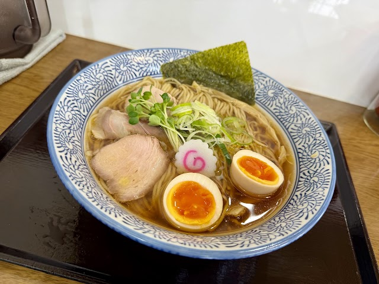
| 営業時間 | 火・水・木・金 10:30〜14:00, 17:00〜19:45 ／ 土 8:00〜14:45, 16:00〜19:45 ／ 日 8:00〜14:45 |
|---|---|
| 定休日 | 月曜 |
| 住所 | 福島県郡山市富久山町久保田岡ノ城６９−４ |
| 予約 | 要確認 — 公式サイト |
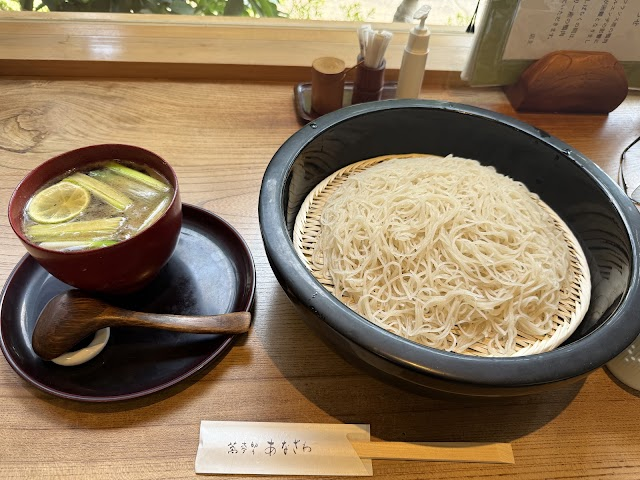
| 営業時間 | 月・水・木・金・土・日 11:00〜14:30 |
|---|---|
| 定休日 | 火曜 |
| 住所 | 福島県郡山市静町３７−１３ |
| 予約 | 可 — ☎ 024-954-6363 ／ 公式サイト |
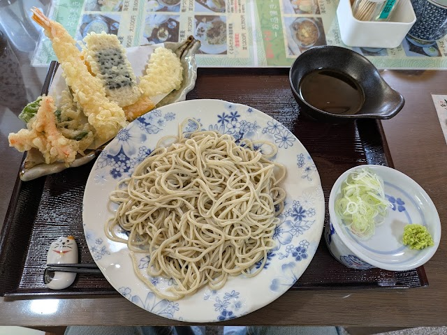
| 営業時間 | 水・木・金・土・日 11:00〜14:00 |
|---|---|
| 定休日 | 月・火曜 |
| 住所 | 福島県郡山市熱海町中山太田１０３−１０ |
| 予約 | 要確認 — ☎ 024-983-6608 ／ 公式サイト |
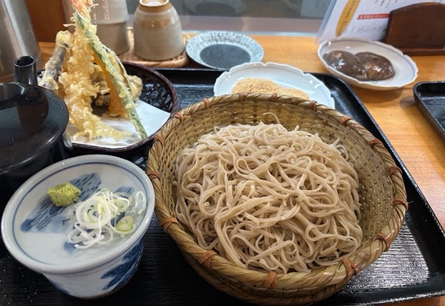
| 営業時間 | 月・火・水・木・金・土 11:00〜15:00 |
|---|---|
| 定休日 | 日曜 |
| 住所 | 福島県郡山市谷地本町３８ |
| 予約 | 可 — ☎ 024-905-6390 ／ 公式サイト |
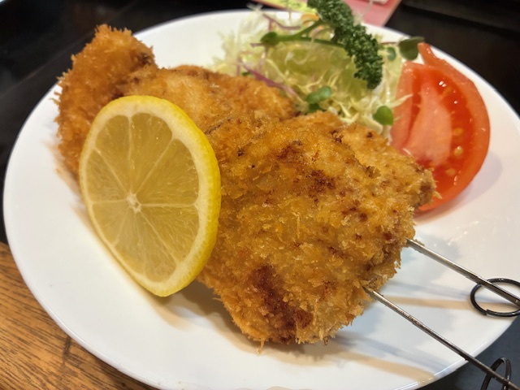
| 営業時間 | 月・火・水・木・金・土 17:00〜20:45 |
|---|---|
| 定休日 | 日曜 |
| 住所 | 福島県郡山市駅前２丁目１−３ ビルＡ |
| 予約 | 可 — ☎ 024-932-8328 ／ 公式サイト |
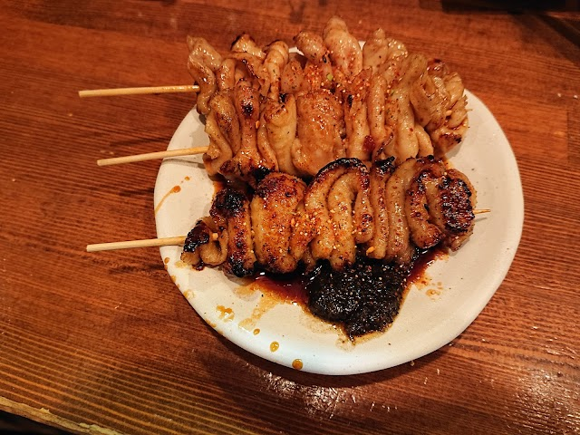
| 営業時間 | 火・水・木・金 16:00〜23:00 ／ 土・日 15:00〜23:00 |
|---|---|
| 定休日 | 月曜 |
| 住所 | 福島県郡山市駅前２丁目１−１４ |
| 予約 | 可 — ☎ 024-931-0305 ／ 公式サイト |
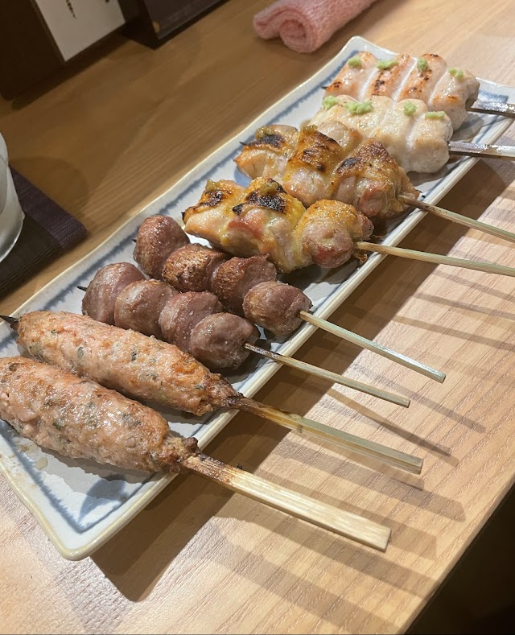
| 営業時間 | 月・水・木・金・土 17:30〜0:00 ／ 日 17:30〜22:00 |
|---|---|
| 定休日 | 火曜 |
| 住所 | 福島県郡山市虎丸町８−７ |
| 予約 | 要確認 — ☎ 050-8884-9833 |
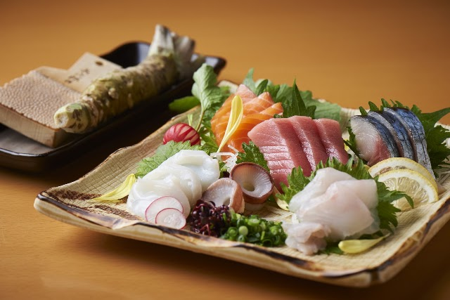
| 営業時間 | 17:00〜23:00(金・土・祝前日は翌0:00まで) |
|---|---|
| 定休日 | 日曜 |
| 住所 | 福島県郡山市中町１２−９ エリートビル 2F |
| 予約 | 可 — ☎ 024-923-9188 ／ 公式サイト |
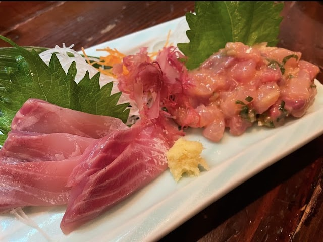
| 営業時間 | 月・水・木・金・土・日 17:00〜23:00 |
|---|---|
| 定休日 | 火曜 |
| 住所 | 福島県郡山市大町１丁目３−１２ |
| 予約 | 可 — ☎ 024-933-9326 ／ 公式サイト |
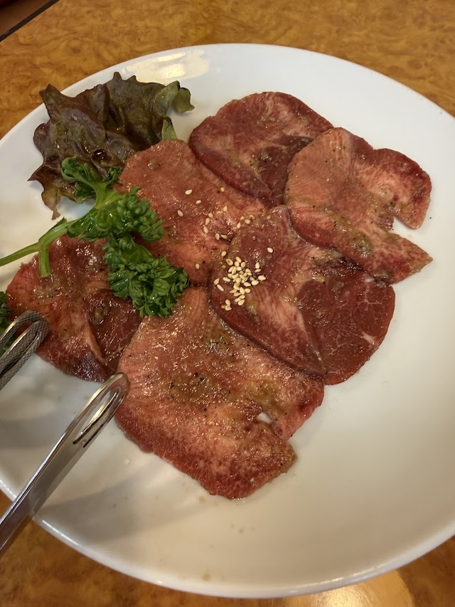
| 営業時間 | 火・水・木・金・土・日 18:00〜23:00 |
|---|---|
| 定休日 | 月曜 |
| 住所 | 福島県郡山市富久山町久保田久保田６１ |
| 予約 | 可 — ☎ 024-932-4832 ／ 公式サイト |
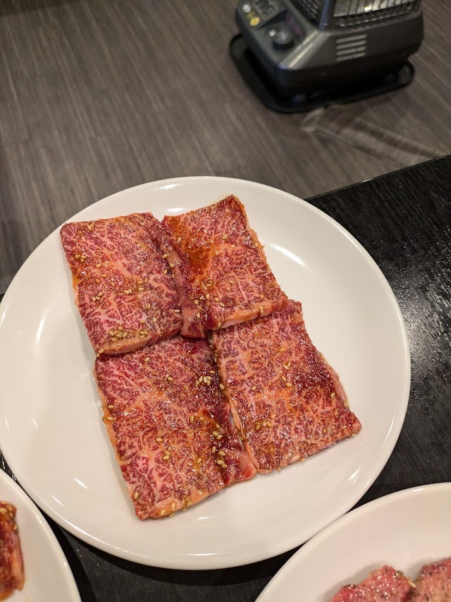
| 営業時間 | 月・水・木・金・土・日 11:30〜14:00, 17:00〜22:00 |
|---|---|
| 定休日 | 火曜 |
| 住所 | 福島県郡山市池ノ台１５−２７ |
| 予約 | 可 — ☎ 024-932-4563 ／ 公式サイト |
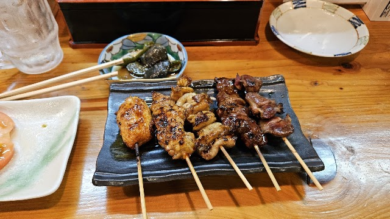
| 営業時間 | 月・火・水・金・土・日 11:00〜13:30, 16:00〜23:00 |
|---|---|
| 定休日 | 木曜 |
| 住所 | 福島県郡山市安積町荒井柴宮山５５−３４ |
| 予約 | 可 — ☎ 050-8890-3993 |
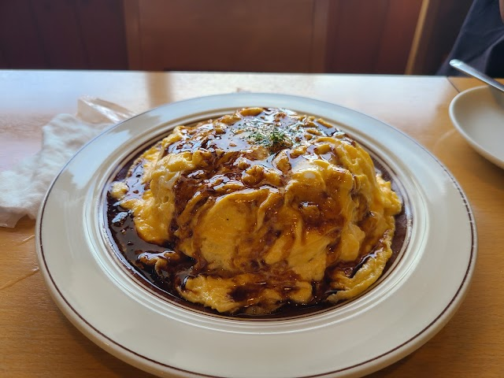
| 営業時間 | 月・火・木・金・土・日 11:30〜15:00, 17:30〜21:30 |
|---|---|
| 定休日 | 水曜 |
| 住所 | 福島県郡山市島２丁目８−３０ 洋食堂リベル |
| 予約 | 可 — ☎ 024-921-9111 ／ 公式サイト |
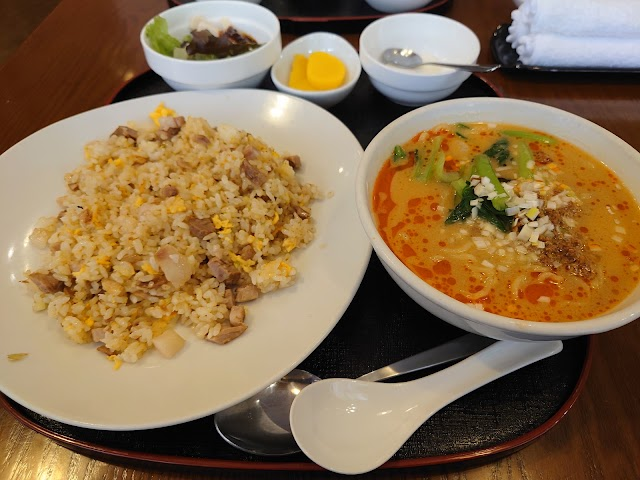
| 営業時間 | 月・火・水・木・金・土 11:00〜14:30, 17:00〜21:00 |
|---|---|
| 定休日 | 日曜 |
| 住所 | 福島県郡山市駅前１丁目４−１５ |
| 予約 | 可 — ☎ 024-923-5722 ／ 公式サイト |
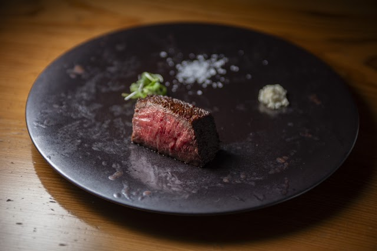
| 営業時間 | 月・火・木・金・土・日 11:00〜15:00, 18:00〜21:00 |
|---|---|
| 定休日 | 水曜 |
| 住所 | 福島県郡山市富田東１丁目３６８ |
| 予約 | 可 — ☎ 024-973-8611 ／ 公式サイト |
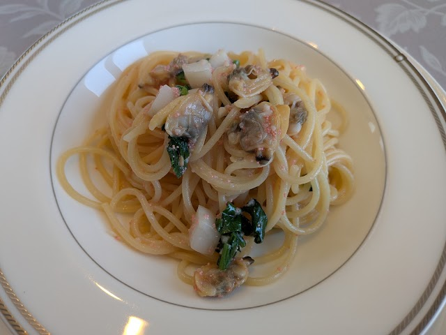
| 営業時間 | 火 11:30〜14:00 ／ 水・木・金・土・日 11:30〜14:00, 17:30〜21:00 |
|---|---|
| 定休日 | 月曜 |
| 住所 | 福島県郡山市並木３丁目６−９ |
| 予約 | 可 — ☎ 024-927-0665 ／ 公式サイト |
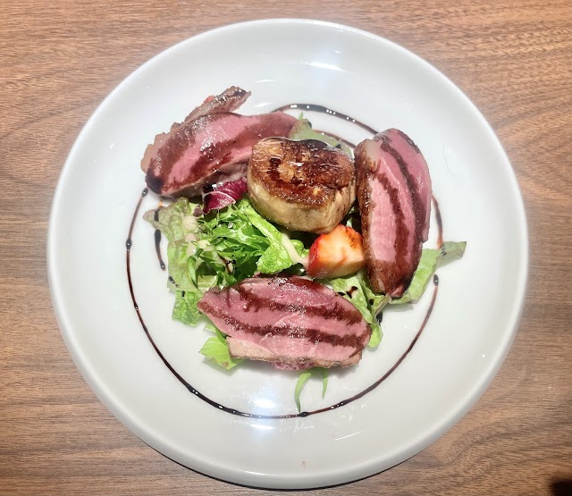
| 営業時間 | 月・火・水・木・金・土 18:00〜0:00 |
|---|---|
| 定休日 | 日曜 |
| 住所 | 福島県郡山市駅前２丁目１−１４ エリート２４ 2F |
| 予約 | 可 — ☎ 024-983-5950 ／ 公式サイト |
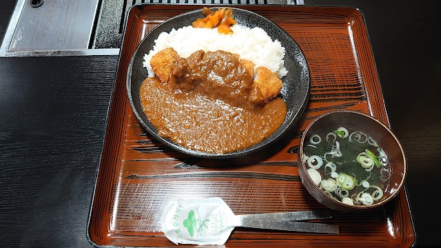
| 営業時間 | 月・火・木・金 18:00〜1:00 ／ 土・日 17:00〜1:00 |
|---|---|
| 定休日 | 水曜 |
| 住所 | 福島県郡山市堂前町３０−１ くぼた屋ビル |
| 予約 | 可 — ☎ 024-924-0193 ／ 公式サイト |
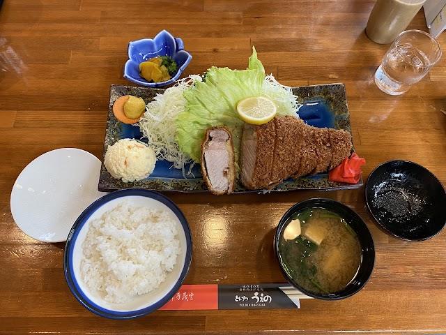
| 営業時間 | 月・火・金・土・日 10:00〜14:00 |
|---|---|
| 定休日 | 水・木曜 |
| 住所 | 福島県郡山市熱海町熱海５丁目１２４ |
| 予約 | 可 — ☎ 024-984-3303 ／ 公式サイト |
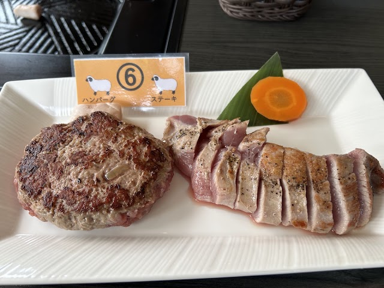
| 営業時間 | 月・木・金・土・日 11:00〜15:30 |
|---|---|
| 定休日 | 火・水曜 |
| 住所 | 福島県郡山市三穂田町富岡武士沢２８−１ |
| 予約 | 可 — ☎ 024-953-7200 ／ 公式サイト |
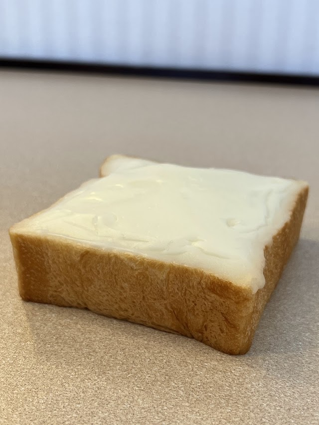
| 営業時間 | 月・火・水・木・金・土・日 9:30〜18:30 |
|---|---|
| 定休日 | なし(要最終確認) |
| 住所 | 福島県郡山市西ノ内２丁目１１−４０ |
| 予約 | 要確認 — ☎ 024-939-1220 ／ 公式サイト |
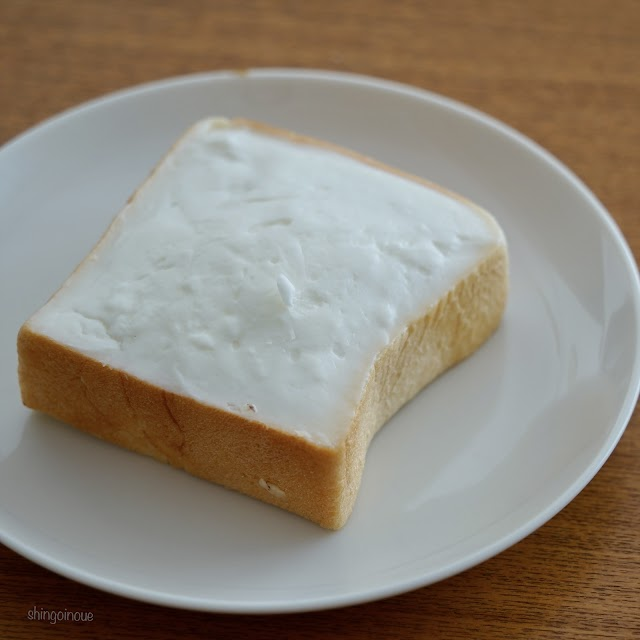
| 営業時間 | 月・火・水・木・金・土 7:30〜18:50 ／ 日 7:30〜17:50 |
|---|---|
| 定休日 | なし(要最終確認) |
| 住所 | 福島県郡山市虎丸町２４−９ |
| 予約 | 要確認 — ☎ 024-923-6536 ／ 公式サイト |
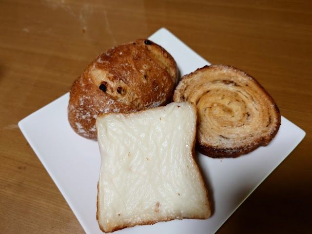
| 営業時間 | 火・水・木・金・土 8:30〜19:30 ／ 日 8:30〜19:00 |
|---|---|
| 定休日 | 月曜 |
| 住所 | 福島県郡山市堂前町２５−２１ |
| 予約 | 要確認 — ☎ 024-932-1095 |
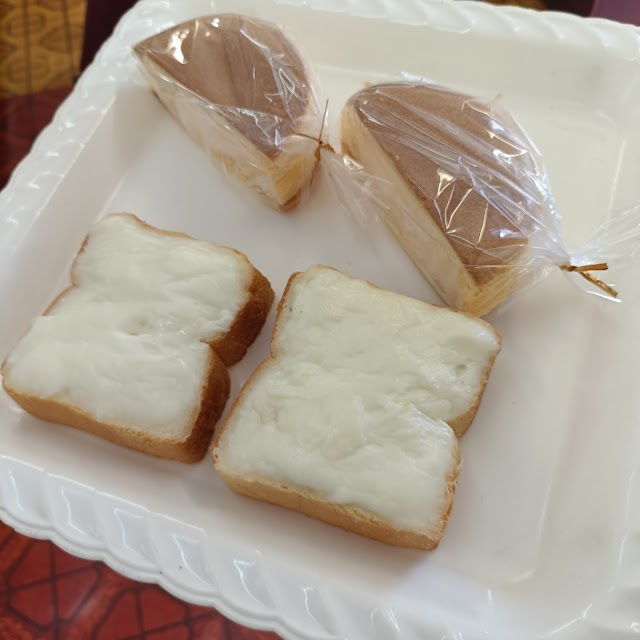
| 営業時間 | 月・火・水・木・金 6:00〜16:00 ／ 土・日 6:00〜15:00 |
|---|---|
| 定休日 | なし(要最終確認) |
| 住所 | 福島県郡山市開成３丁目１２−１２ |
| 予約 | 要確認 — ☎ 024-932-2133 ／ 公式サイト |
| 営業時間 | 火・水・木・金・土 10:00〜17:00 |
|---|---|
| 定休日 | 月・日曜 |
| 住所 | 福島県郡山市御前南１丁目８２ |
| 予約 | 可 — ☎ 024-954-5887 ／ 公式サイト |
| 営業時間 | 月・火・水・木・金・土・日 8:30〜17:00 |
|---|---|
| 定休日 | なし(要最終確認) |
| 住所 | 福島県郡山市中野１丁目１８−１８ |
| 予約 | 可 — ☎ 024-954-4036 ／ 公式サイト |
| 営業時間 | 月・火・水・金・土 14:00〜22:00 |
|---|---|
| 定休日 | 木・日曜 |
| 住所 | 福島県郡山市七ッ池町１−１４ グリーンコーポ 1F |
| 予約 | 要確認 |
| 営業時間 | 月・火・水・木・金・土・日 10:00〜19:00 |
|---|---|
| 定休日 | なし(要最終確認) |
| 住所 | 福島県郡山市中町１１−８ |
| 予約 | 要確認 — ☎ 024-932-5580 ／ 公式サイト |
| 営業時間 | 月・火・水・木・金・土・日 10:00〜20:00 |
|---|---|
| 定休日 | なし(要最終確認) |
| 住所 | 福島県郡山市八山田５丁目４０５ 株)青木商店本社内 |
| 予約 | 可 — ☎ 024-932-0251 ／ 公式サイト |
本ガイドは個人利用目的で作成。掲載情報は2026年8月時点の調査に基づく。写真出典: Google Maps投稿写真(©各投稿者/Google)。